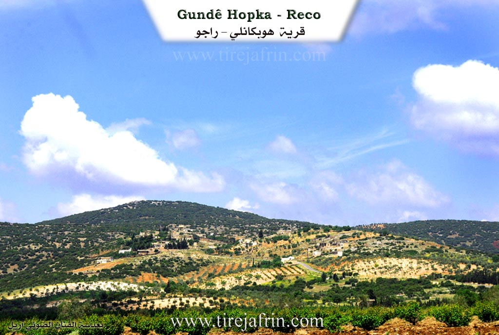
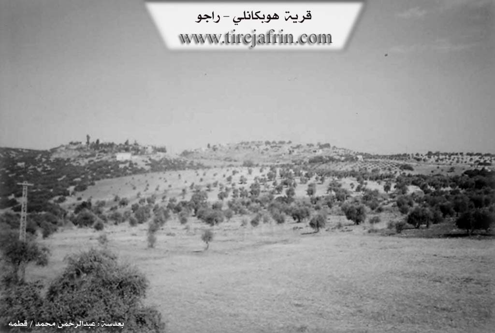

General Information
Nahiya (Subdistrict)
Reco
Also Known As
Al-Qadiriya, Hopka, Hopkanli, القادرية, هوبكانلي, هوبكه
Photos


Basic Information about Hopka
Source: Tirej Afrin
Etymology: The name Hopka is Kurdish in terms of form and pronunciation, but its true meaning has not been determined. The new Arabized name "Qadiriye" is the surname of Ibrahîm Qadir, a resident of the village who served on the committee for Arabizing names in the region; he was rewarded by having the village named after his father.
Foundation Date/Period: Approximately 350 years ago
Ruins: Xerabê Hopkanlî
Wells: Bîra Reco
Other Landmarks: Mezra Banîk, Stasyona Trêna Reco
Summaries
I. Summary from TirejAfrin Site (English) of Hopka
Source: https://www.tirejafrin.com/site/kura%20afrin%20%20%20Reco%20-%20hopka.htm
The following is stated in the book جبل الكرد (عفرين) دراسة جغرافية Çiyayê Kurmênc (Efrîn): A Geographical Study: Hopka, Hopkanlî, Qadiriye / 677 inhabitants, 2km, 650m /:
Hopka: This is a Kurdish name in terms of form and pronunciation, but we have not arrived at its true indication or meaning. As for the new Arabized name "Qadiriye", it is the surname of Ibrahîm Qadir, one of the village residents who participated in the committee for Arabizing names in the region, so he was rewarded by giving the name of his father to the village.
It is a small village located on the eastern slopes of Çiyayê Herecî, separated from the town of Reco by Deşta Balyê (Balyê plain). It is the birthplace of the Kurdish politician Reşîd Hemo, who currently resides there.
The following is stated in the book عفرين .... نهرها وروابيها الخضراء Efrîn... Her River and Her Green Hills: Hopkanlî: A village in Çiyayê Kurmênc belonging to the Reco district, Efrîn area, Heleb governorate. It is a small village situated on a mountainous elevation. It is bordered to the north by a slope and the ruins of Xerabê Hopkanlî; to the south by a slope planted with olive trees and the farm of Mezra Banîk; to the east by a slope, a fertile plain, the Stasyona Trêna Reco (Rajo train station), and the town of Reco; and to the west by a high, rugged mountain chain planted with oak and terebinth trees, and the village of Sork and Kaniya Batmanê.
The number of its houses is about 30, and its age is approximately 350 years. Its old dwellings are made of stone and mud with flat wooden roofs, while modern cement ones have spread onto the western and eastern hills. An electricity network is available, as well as drinking water from Bîra Reco (Rajo well) and a primary school. It connects to the district center via a leveled, unpaved dirt road. The residents work in rain-fed agriculture (grains, olives, vines, and other fruit trees), alongside raising sheep and goats.
Village Mukhtar: Şukrî Hesen Ehmed
Sources of Information:
- Book: جبل الكرد (عفرين) دراسة جغرافية Çiyayê Kurmênc (Efrîn): A Geographical Study by د. محمد عبدو علي Dr. Mihemed Ebdo Elî.
- Book: عفرين .... نهرها وروابيها الخضراء Efrîn... Her River and Her Green Hills by عبدالرحمن محمد Ebdulrehman Mihemed from the village of Qetme.
- Studies of Navenda Tirej Soft / Ebdulrehman Hacî Osman.
- Some residents of the villages.
Preparation and execution: Manager of the website Tirej Efrîn: Ebdulrehman Hacî Osman 20/12/2013
II. Summary of Hopka from Afrin 366
Source: https://www.youtube.com/watch?v=etN5u5rIQmU
The documentary traverses the rugged highlands of the Racû district in Efrîn, focusing on the interconnected settlements of Hûbka, its smaller hamlet Banîkê, and the neighboring village of Şêx Bilo. The narrative reveals a region defined by its elevation and agricultural heritage, where ancient stone architecture stands in contrast to the depopulation caused by modern migration.
The social fabric here is a tapestry of migration; a female resident recounts that her ancestors were not originally from the village but came from Xolfet and Amara, eventually settling in Racû and Musaka before establishing themselves in Hûbka. She identifies the village's founding lineages as Mola Evdik and Mola Osman Reşik, noting that these families originally came from across the border in Turkey. Today, the village is known for its high quality produce, specifically hejîr (figs), baîv (almonds), and simaq (sumac), though the population has dwindled significantly, with many families relocated to Almanya and Holanda.
Transcript: Hopka_Banîkê_Şêx_Bila_Afrin 366_1. Hopka is clearly covered from 18:40 to 23:27. The stretch from 09:00 to 14:20 may also be Hopka.
Transcriptions and Subtitles
| Source | Video | Subtitles | Transcript |
|---|---|---|---|
| Afrin 366 1 | Watch Video | Download SRT | View Transcript |
Possible Village Name Meaning of Hopka
Hopka is a Kurdish name, but its true meaning has not been determined. The new Arabized name, Al-Qadiriya, is the nickname for Ibrahim Qader, a village resident on the name Arabization committee who was rewarded by having the village named after his father.
Source: TirejAfrin Site